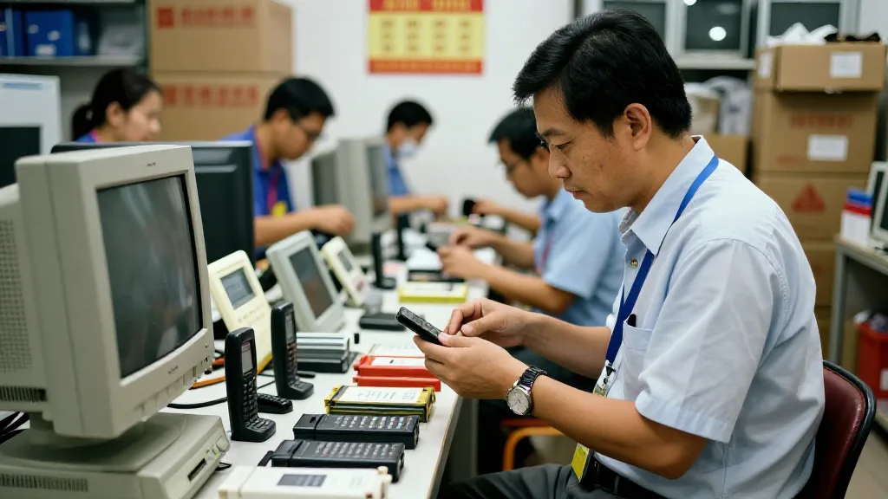

引子：上帝视角下的反差
如果有一日，你企喺云端之上，低头望住一座山嘅腰，你会睇到啲咩？
我最近睇到一张航拍图，唔系边个大师嘅作品，可能只系一个普通游客随手撳落嘅无人机镜头。但就咁一张相，胜过千言万语。
画面入面，一座山被劈成两半。左边灰扑扑嘅铁皮屋顶参差不齐，蓝绿色嘅防水帆布喺风中打皱，混凝土挡土墙层层叠起托住低矮嘅砖房。右边米白色嘅独栋别墅错落喺山坡上，落地玻璃窗反射住天光，屋顶同露台装住深蓝色嘅太阳能光伏板。中间一道浓绿嘅森林缓冲带，将两个世界清清楚楚分隔开。
一墙之隔，天壤之别
睇住呢张相，我谂起咗好多嘢。两边实际距离好近，可能行路唔使五分钟。但视觉上、心理上、生活质素上嘅距离，差咗可能一辈子。
左边屋顶嘅水箱系储水嘅，因为供水唔稳定；右边屋顶嘅太阳能板系发电嘅，因为电费贵，但环保更重要。一种系「求温饱」，一种系「讲生活」。左边好似停留喺上世纪七八十年代，右边充满现代设计语言，两边只隔住一道山坡，但时间差可能成几十年。

圖片由 AI輔助創作（Z-Image-Turbo）
1998年，我由电子产品入行
1998年我开始做贸易嘅时候，深圳仲系一个边陲小镇，到处都系工地同铁皮屋。
嗰阵主流手机系诺基亚，电池唔耐用。我哋有客户自己组装外置电池，卖去外蒙古、俄罗斯远东，因为那边冬天零下30度，原装电池根本顶唔顺。我嗰时就谂，呢种极端场景嘅产品，永远有人要。
一件产品嘅价值，唔系科技有几高，而系能唔能够喺一个边缘场景，解决正路方案解决唔到嘅问题。呢个谂法，一直跟住我做到而家。
圖片由 AI輔助創作（Z-Image-Turbo）
由手表手机，到家电同跨境电商
2005年，我哋做出全球首款手表手机；2006年有四频老人机；2008年推广手机无线充电；2010年制作力距传感电机。嗰阵我哋相信，产品唔需要等巨头点头，中小团队一样可以由零做到有。
后来我做埋家电、服装、珠宝同教育培训，再由传统外贸走到TikTok、Amazon、阿里巴巴、独立站。每一次换赛道，都好似由山嘅一边搬去另一边，身边嘅人同风景全部换晒，但做生意嘅本质冇变：睇住用家真正嘅痛点，交货要准时，质量唔可以甩。
圖片由 AI輔助創作（Z-Image-Turbo）
住埋但唔相识，产品都一样
我曾经喺香港行过大澳、荔枝窝同深井，传统渔村被豪宅包围，原住民同新富阶层住得好近，但烦恼同希望几乎冇交集。航拍图里面嗰片森林，好似命运画低嘅界线。
电子产品都一样。同一条街，有人仲用紧功能机省电省钱，有人已经用AI手机处理成份工作。大家喺同一个时代，但过紧唔同嘅产品人生。做产品嘅人，如果只系睇住山顶嘅别墅，就会忘记山脚仲有好多人等紧一部平、靓、正解决到问题嘅设备。
圖片由 AI輔助創作（Z-Image-Turbo）
而家我搞AI算力，答案冇变
而家我搞七善门科技同星辰算力，帮企业部署AI基础设施。有人问我，由卖电子产品跳去AI，会唔会断层？我说唔会。以前系帮客户将硬件由工厂送到用户手上，而家系帮客户将算力由机房送到业务里面，中间都系同一件事：唔好只讲参数，要解决最后一公里。
航拍图最下方，我留意到一抹红色，似系一部巴士嘅顶部，停喺山路尽头。呢部红色巴士，可能就系连接两个世界嘅工具。我谂，所谓社会进步，可能就系睇呢部巴士班次够唔够密，票价贵唔贵，有冇人坐得起。
每一次城市化都系一次筛选，每一次产品换代都系一次筛选。留下嘅享受红利，离开嘅带着故事。唔好遗忘另一边，多行一步，谂清楚自己拥有嘅有几多系时代馈赠。感恩唔系姿态，而系必须。